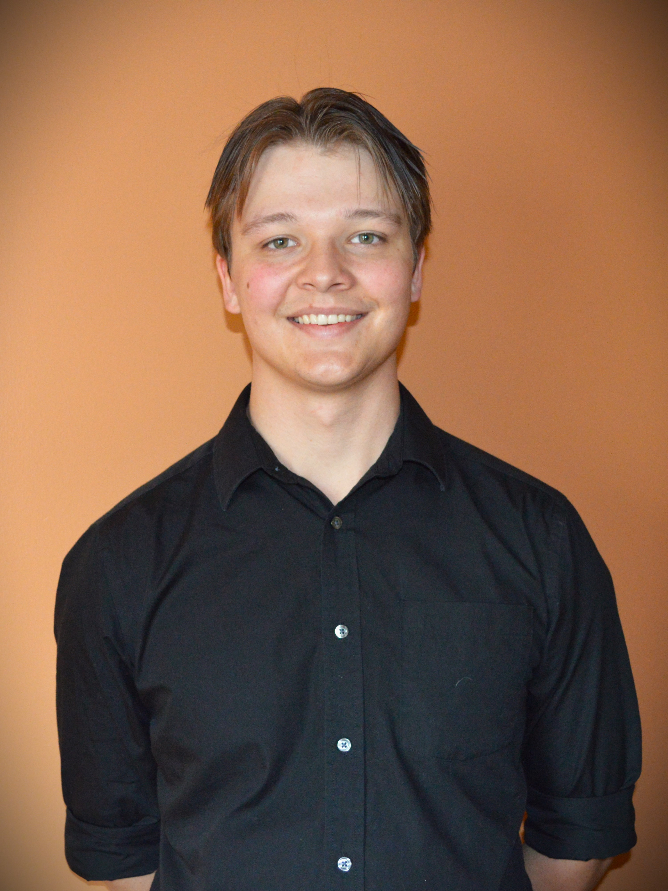

Hello, I’m Karl Gratz. I’m a third-year student attending the University of Central Florida studying to achieve a bachelor’s degree in computer science. Originally wanting to go to school for engineering, a programming class in one of my earliest semesters caught my attention and I haven’t wanted to stop practicing different programming languages since. Through that experience I discovered that I am very interested in computer science and information technology fields. I have a passion for creating artistic and functional projects through programming languages like C, C#, Java, HTML, CSS, and Python, as well as software such as Unity, and Unreal Engine. As for my personal background, I was born in Salt Lake City, Utah, and lived briefly in San Diego, California, before I finally moved to New Smyrna Beach, Florida where I have lived for over ten years now. I believe that having several different backgrounds growing up has contributed a lot to who I am and how I approach life. I strive to grow, learn, and adapt from every situation in my life and to respect people of every background and standing. I believe that something valuable can be taught from almost anything and anyone.